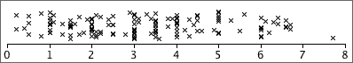

Jittering the crosses
In all but the smallest data sets, the crosses on a basic dot plot overlap, making it difficult to identify regions of high density.
Randomly moving crosses away from the axis reduces this problem by separating the crosses:

Note that the vertical jittering is random and therefore tells you nothing about the data.